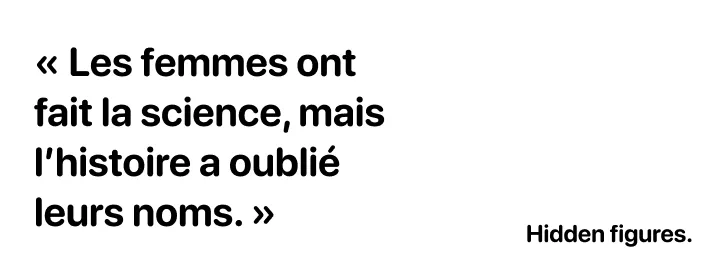

Dans The Glass Universe de Dava Sobel, les femmes astronomes de l’observatoire de Harvard sont enfin mises à l’honneur, après avoir longtemps travaillé dans l’ombre sans reconnaissance officielle.
Les chercheuses
dans la literrature.
La littérature joue un rôle essentiel dans la reconnaissance des femmes scientifiques. À travers des romans, biographies et essais, elle permet de réparer les injustices de l'histoire et de rendre visibles celles dont les découvertes ont été effacées ou attribuées à des hommes.
Exemples.
De la même façon, Rise of the Rocket Girls de Nathalia Holt et Hidden Figures de Margot Lee Shetterly racontent le rôle essentiel des femmes de la NASA, longtemps ignorées dans les récits de la conquête spatiale.
Ces œuvres rappellent que les femmes ont été des actrices majeures du progrès scientifique, même si l’histoire ne les a pas toujours retenues.
En mettant en lumière ces figures oubliées, la littérature devient un outil puissant de reconnaissance et d’éducation. Elle complète le travail de vulgarisation scientifique et renforce le message du site : lutter contre l’invisibilisation des femmes et promouvoir la diversité dans le monde scientifique.
En mettant en lumière ces figures oubliées, la littérature devient un outil puissant de reconnaissance et d'éducation.
Citation.
Margot Lee Shetterly.

Frise chronologique.
Premier paragraphe de votre texte d'introduction sur la frise chronologique. Vous pouvez mettre ici le contexte historique ou l'importance de ces dates.
Deuxième paragraphe pour compléter l'explication. Il sera séparé du premier par un espace de 10px pour garder la cohérence visuelle.
1938
Lise Meitner
1952
Rosalind Franklin
1959
Marthe Gautier
1960
Jane Goodall
1969
Margaret Hamilton